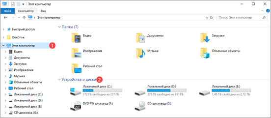
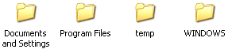

Локальный диск
В этом уроке я расскажу, что такое Локальный диск. Какие они бывают, где находятся на компьютере. А также как ими правильно пользоваться.
Локальный диск — это хранилище информации на компьютере. То место, где находятся все данные на ПК: видео, музыка, документы, фото и прочее.
Зайти в него можно из значка «Этот компьютер». Для этого кликните по иконке Проводника на Панели задач.
В левом списке щелкните по «Этот компьютер». В части «Устройства и диски» будут показаны все Локальные диски компьютера (на картинке их три). Именно в них и хранится информация на ПК.
Один такой раздел есть всегда и называется «Локальный диск C». Внутри него несколько папок с английскими названиями.
А в них много разных иконок — папок и файлов с непонятными названиями. Они «отвечают» за работу ПК, это и есть операционная система Windows.
Если же вы здесь что-нибудь нарушите — удалите, поменяете название, перенесете, — то компьютер может выйти из строя. Поэтому в разделе C лучше ничего не «трогать». Лучше вообще в него не заходить. По крайней мере, до тех пор, пока вы не научитесь свободно пользоваться компьютером.
Локальный диск D и другие разделы — это самые важные значки на ПК. В них мы будет хранить всю нашу информацию: книги, музыку, фото и картинки, документы и так далее.
Откройте какой-нибудь диск (D или E). Если вы недавно купили компьютер, то, скорее всего, в нем ничего не будет. Но если же компьютером пользовались, то в этих разделах будут файлы и папки с информацией. Можете «погулять» по ним.
В этих местах мы будет хранить всю информацию. Это касается диска D и любых других, кроме C — в нем находится система, и нам там делать нечего.
Многие люди по незнанию хранят свои данные в «Документах» и на Рабочем столе (на экране). Это большая ошибка. Давайте проверим, как обстоят дела на вашем ПК:
- Закройте все открытые окна.
- Посмотрите, что находится на Рабочем столе (на экране).
На значки со стрелкам не обращайте внимания. Они называются ярлыки и пока нас не интересуют. Посмотрите, есть ли там папки и файлы без стрелочек. Вот их-то как раз и не должно быть на Рабочем столе, они должны быть в диске D или любом другом, кроме C.
Научиться переносить файлы и папки в другие разделы можно из урока Копирование.
Также откройте «Документы». Такая иконка находится на Рабочем столе или в кнопке «Пуск». Если там несколько папок и они пустые или практически пустые, то всё в порядке. А вот если в Документах много файлов и папок с важной информацией, то нужно перенести их в Локальные диски (D или E).
Дело в том, что Рабочий стол, а также папка «Документы» на самом деле находятся в разделе C. То есть там, где операционная система Windows. И если вдруг что-то произойдет, например, испортится система или проникнет вирус, есть большая вероятность, что из «Документов» и с Рабочего стола все сотрется. А кроме того, отдел C может переполниться, и компьютер начнет работать очень медленно или вообще перестанет работать.
Лучше лишний раз не рисковать и «складывать» все важные папки и файлы в раздел D или любой другой Локальный диск, кроме C.
На заметку. Если у вас есть только один системный раздел (C), то это не очень хорошо. Желательно его разделить на несколько частей. О том, как это сделать, можно узнать в уроке Как разделить диск. Но если вы начинающий пользователь, лучше попросить об этом знакомого компьютерщика или компьютерного мастера.